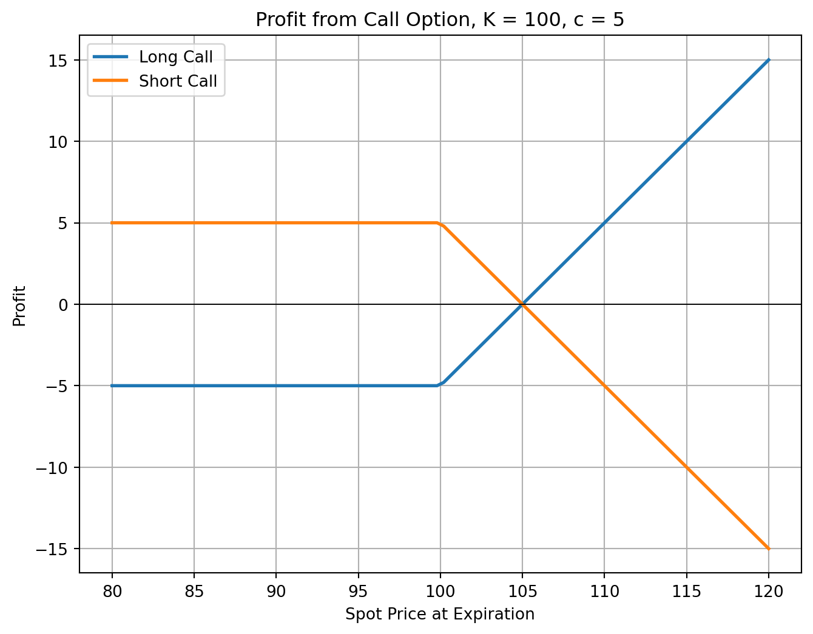
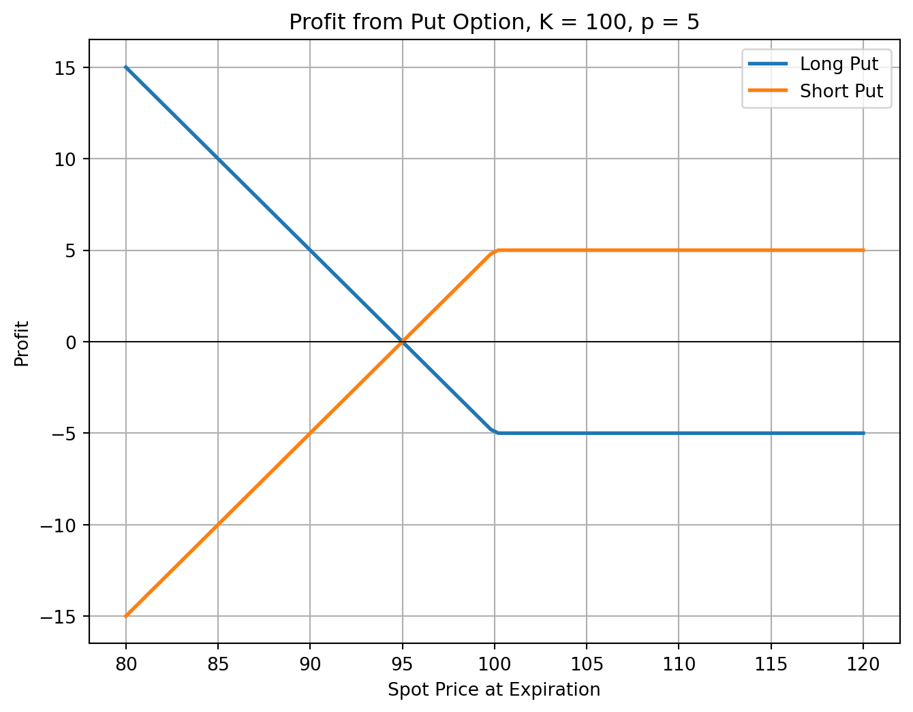

5 Options
References
- HULL, John. Options, futures, and other derivatives. Ninth edition. Harlow: Pearson, 2018. ISBN 978-1-292-21289-0.
- Chapter 10. Mechanics of Options Markets
- Chapter 11. Properties of Stock Options
- PIRIE, Wendy L. Derivatives. Hoboken: Wiley, 2017. CFA institute investment series. ISBN 978-1-119-38181-5.
- Chapter 1 - Derivative Markets and Instruments
Learning Outcomes:
- Comprehend the fundamentals and definitions of options, including the mechanics behind option payoffs and profits.
- Identify and understand other option characteristics, adjustments, and the relationship with related assets.
- Grasp the principles underlying option pricing dynamics, along with the factors influencing option values.
- Analyze the upper and lower bounds for option prices and the concept of put-call parity in option trading strategies.
- Evaluate the specific considerations for American options, including the impact of early exercise decisions and dividends on option valuation.
5.1 Understanding Options
Definition
Options are financial derivatives that give the buyer the right, but not the obligation, to buy (call option) or sell (put option) an asset at a predetermined price (strike price) on or before a specific date. The seller (writer) receives a premium in exchange for granting this right.
Types of options:
- Call Option: Gives the holder the right to buy an asset at the strike price before expiration. Buyers expect the asset’s price to rise.
- Put Option: Gives the holder the right to sell an asset at the strike price before expiration. Buyers expect the asset’s price to fall.
Execution Styles:
- American Option: Can be exercised at any time before expiration, offering more flexibility.
- European Option: Can only be exercised on the expiration date, making it more predictable but less flexible.
Options can be written on various assets, including:
- Stocks
- ETFs and ETPs
- Foreign currency
- Stock indices
- Futures
Margin account:
- Buying options does not require margin as the buyer’s risk is limited to the premium paid.
- Selling options requires margin due to the obligation to fulfill the contract.
Option Value Components:
- Intrinsic Value: The profit from immediate exercise.
- Time Value: The extra value reflecting potential future price changes.

5.2 Option Payoffs and Profits
Understanding Option Payoffs
The option buyer’s payoff depends on the relationship between the price of the underlying asset at expiration (\(S_T\)) and strike price of the option (\(K\)).
Moneyness determines whether exercising the option would be profitable:
- In the Money (ITM): Exercising the option yields a positive payoff.
- At the Money (ATM): The option’s strike price equals the asset price (\(S_T = K\)). There is no intrinsic value.
- Out of the Money (OTM): Exercising the option results in zero payoff.
Moneyness is crucial for pricing and trading decisions, as ITM options have intrinsic value, while ATM and OTM options are purely speculative.
- Call Option Payoff: \[ c_T = \max(0, S_T - K) \]
- Put Option Payoff: \[ p_T = \max(0, K - S_T) \]
Example: Option Payoff
Given an underlying asset price at expiration \(S_T\) of $28 and a strike price \(K\) of $25, the payoffs for call and put options are calculated as follows:
- Call Buyer Payoff: \(c_T = \max(0, \$28 - \$25) = \$3\)
- Put Buyer Payoff: \(p_T = \max(0, \$25 - \$28) = \$0\)
The call is in the money with a payoff of $3, while the put is out of the money with no payoff.
Calculating Option Profit
To determine profit, the option premium (\(c_0\) for calls, \(p_0\) for puts) must be considered:
- Call Option Profit: \[ \Pi_{call} = \max(0, S_T - K) - c_0 \]
- Put Option Profit: \[ \Pi_{put} = \max(0, K - S_T) - p_0 \]
Example: Option Profit
Considering CBX stock options with a strike price \(K = \$30\), where the call and put premiums are $1 and $2 respectively, and the stock price at expiration \(S_T\) is $27.50:
- Call Option Profit: \(\Pi_{call} = \max(0, \$27.5 - \$30) - \$1 = -\$1\)
- Put Option Profit: \(\Pi_{put} = \max(0, \$30 - \$27.5) - \$2 = \$0.5\)
The call buyer loses $1, while the put buyer profits $0.5.
5.4 Understanding the Dynamics of Option Pricing
The value of stock options depends on several key factors, each influencing option prices under the ceteris paribus (all else equal) assumption. The table below summarizes the impact of these variables on European and American options:
| Variable | European Call | European Put | American Call | American Put |
|---|---|---|---|---|
| Current Stock Price (\(S_0\)) | \(+\) | \(-\) | \(+\) | \(-\) |
| Strike Price (\(K\)) | \(-\) | \(+\) | \(-\) | \(+\) |
| Time to Expiration (\(T\)) | \(?\) | \(?\) | \(+\) | \(+\) |
| Volatility (\(\sigma\)) | \(+\) | \(+\) | \(+\) | \(+\) |
| Risk-free Rate (\(r\)) | \(+\) | \(-\) | \(+\) | \(-\) |
| Amount of Future Dividends (\(D\)) | \(-\) | \(+\) | \(-\) | \(+\) |
- \(c\), \(p\): Prices of European call and put options.
- \(C\), \(P\): Prices of American call and put options.
- \(S_0\): Current stock price.
- \(S_T\): Stock price at expiration.
- \(K\): Strike price.
- \(T\): Time to expiration.
- \(\sigma\): Stock price volatility.
- \(D\): Present value of future dividends.
- \(r\): Risk-free interest rate (continuous compounding).
American vs. European Options
American options, which can be exercised anytime before expiration, are always worth at least as much as their European counterparts:
\[ C \geq c, \quad P \geq p \]
This is due to the added flexibility of early exercise, making American options inherently more valuable or, at minimum, equal in price to European options.
5.5 Upper and Lower Bounds for Option Prices
Upper Bound - Call Option
The price of a call option, whether American or European, cannot exceed the current stock price: \[ c \leq S_0, \quad C \leq S_0 \]
This prevents arbitrage, as no rational investor would pay more for a call than the stock itself.
Upper Bound - Put Option
- American put options: Capped at the strike price since the holder can sell at \(K\): \[ P \leq K \]
- European put options: Limited by the present value of \(K\), as they can only be exercised at expiration: \[ p \leq K e^{-rT} \]
Lower Bound - European Call Option
The minimum price of a European call on a non-dividend paying stock is: \[ c \geq \max(S_0 - K e^{-rT}, 0) \]
Example: European Call Lower Bound
Given: \(S_0 = 20\), \(K = 18\), \(T = 1\), \(r = 10\%\), \(D = 0\) \[ \text{Lower bound} = 20 - 18 e^{-0.1} = 3.71 \]
If the call price is $3, an arbitrageur could short the stock, buy the call, and invest at 10%.
Lower Bound - European Put Option
For puts on non-dividend paying stock, the lower bound is: \[ p \geq \max(K e^{-rT} - S_0, 0) \]
Example: European Put Lower Bound
Given: \(S_0 = 37\), \(K = 40\), \(T = 0.5\), \(r = 5\%\), \(D = 0\) \[ 40 e^{-0.05 \times 0.5} - 37 = 2.01 \]
If the put price is $1, an arbitrageur could borrow $38 for six months to buy both the put and stock.
American Options and Early Exercise
American Call Options (Non-Dividend Paying Stocks)
It is never optimal to exercise early because:
- Preserving capital: Delaying exercise defers payment of \(K\).
- Insurance benefit: Holding the call provides downside protection.
- Maximizing value: Selling the option retains its time value.
Thus, their price bounds are the same as European calls: \[ C \geq \max(S_0 - K e^{-rT}, 0) \]
American Put Options (Non-Dividend Paying Stocks)
Early exercise may be optimal, especially when deep in the money:
- Immediate value realization: \(K - S_0\) can be collected now.
- Time value of money: Receiving proceeds sooner is preferable.
- Stock price limitations: Since \(S_0 \geq 0\), the put’s value is capped.
Thus, the lower bound for American puts is adjusted: \[ P \geq \max(K - S_0, 0) \]
5.6 Put-Call Parity
Put-call parity establishes a fundamental relationship between European call and put options with the same strike price and expiration. It ensures pricing consistency in the absence of arbitrage opportunities.
Put-Call Parity for Non-Dividend Paying Stocks
Consider two equivalent portfolios:
- Portfolio A: A European call option (\(c\)) and a zero-coupon bond paying \(K\) at expiration.
- Portfolio B: A European put option (\(p\)) and the underlying stock (\(S_0\)).
At expiration (\(T\)), both portfolios yield the same payoff:
| \(S_T > K\) (Above Strike) | \(S_T < K\) (Below Strike) | ||
|---|---|---|---|
| Portfolio A | Call option | \(S_T - K\) | \(0\) |
| Zero-coupon bond | \(K\) | \(K\) | |
| Total | \(S_T\) | \(K\) | |
| Portfolio B | Put Option | \(0\) | \(K - S_T\) |
| Share | \(S_T\) | \(S_T\) | |
| Total | \(S_T\) | \(K\) |
Since both portfolios must have the same present value, we get the put-call parity equation: \[ c + K e^{-rT} = p + S_0 \]
Arbitrage Opportunities via Put-Call Parity
Consider an example where \(S_0 = \$31\), \(r = 10\%\), the call option price \(c = \$3\), and the strike price \(K = \$30\). The table outlines potential arbitrage strategies based on discrepancies in put option pricing, illustrating the mechanism for securing risk-free profits by leveraging the put-call parity principle.
| Three-month put price = $2.25 | Three-month put price = $1 |
|---|---|
| Action now: | Action now: |
| Buy call for $3 | Borrow $29 for 3 months |
| Short put to realize $2.25 | Short call to realize $3 |
| Short the stock to realize $31 | Buy put for $1 |
| Invest $30.25 for 3 months | Buy the stock for $31 |
| … | |
| Action in 3 months if \(S_T > 30\): | Action in 3 months if \(S_T > 30\): |
| Receive $31.02 from investment | Call exercised: sell stock for $30 |
| Exercise call to buy stock for $30 | Use $29.73 to repay loan |
| Net profit = $1.02 | Net profit = $0.27 |
| … | |
| Action in 3 months if \(S_T < 30\): | Action in 3 months if \(S_T < 30\): |
| Receive $31.02 from investment | Exercise put to sell stock for $30 |
| Put exercised: buy stock for $30 | Use $29.73 to repay loan |
| Net profit = $1.02 | Net profit = $0.27 |
Extension to American Options
Put-call parity strictly applies to European options. However, for American options, which allow early exercise, the pricing relationship is bounded by:
\[ S_0 - K \leq C - P \leq S_0 - K e^{-rT} \]
This range accounts for the added flexibility of early exercise, particularly for American put options, which may be exercised early if deep in the money.
5.7 Effect of Dividends on Options
Dividends impact option valuation and exercise strategies, particularly for American call options. The present value of expected dividends over the option’s life is denoted as \(D\). Understanding the impact of dividends is crucial for accurate option pricing and strategic decision-making.
Dividends reduce call option value due to lost dividend income.
Dividends increase put option value as they lower the stock price.
For American call options, early exercise is typically suboptimal. However, if a dividend is expected, it may be beneficial to exercise just before the ex-dividend date to capture the dividend payout. Apart from this scenario, early exercise remains suboptimal.
Adjusted Lower Bound Valuations
Dividends modify the lower bounds of option prices:
- Call Options: The lower bound decreases since early exercise forfeits dividends: \[ c \geq S_0 - D - K e^{-rT} \]
- Put Options: The lower bound increases, as dividends reduce the stock price: \[ p \geq D + K e^{-rT} - S_0 \]
Adjusted Put-Call Parity with Dividends
Dividends also modify the put-call parity relationship:
- European Options with Dividends: \[ c + D + K e^{-rT} = p + S_0 \]
- American Options with Dividends: \[ S_0 - D - K < C - P < S_0 - K e^{-rT} \]
5.8 Practice Questions and Problems
Option Profitability and Exercise Conditions
- Suppose that a European call option to buy a share for $100.00 costs $5.00 and is held until maturity. Under what circumstances will the holder of the option make a profit? Under what circumstances will the option be exercised? Draw a diagram illustrating how the profit from a long position in the option depends on the stock price at maturity of the option.
- An investor sells a European call on a share for $4. The stock price is $47 and the strike price is $50. Under what circumstances does the investor make a profit? Under what circumstances will the option be exercised? Draw a diagram showing the variation of the investor’s profit with the stock price at the maturity of the option.
- An investor buys a European put on a share for $3. The stock price is $42 and the strike price is $40. Under what circumstances does the investor make a profit? Under what circumstances will the option be exercised? Draw a diagram showing the variation of the investor’s profit with the stock price at the maturity of the option.
- Suppose that a European put option to sell a share for $60 costs $8 and is held until maturity. Under what circumstances will the seller of the option (the party with the short position) make a profit? Under what circumstances will the option be exercised? Draw a diagram illustrating how the profit from a short position in the option depends on the stock price at maturity of the option.
Margin Requirements, Market Choices, and Contract Adjustments
- Explain why margin accounts are required when clients write options but not when they buy options.
- A corporate treasurer is designing a hedging program involving foreign currency options. What are the pros and cons of using (a) the NASDAQ OMX and (b) the over-the-counter market for trading?
- The treasurer of a corporation is trying to choose between options and forward contracts to hedge the corporation’s foreign exchange risk. Discuss the advantages and disadvantages of each.
- Consider an exchange-traded call option contract to buy 500 shares with a strike price of $40 and maturity in four months. Explain how the terms of the option contract change when there is
- A 10% stock dividend
- A 10% cash dividend
- A 4-for-1 stock split
Option Pricing Bounds
- Explain why an American option is always worth at least as much as a European option on the same asset with the same strike price and exercise date.
- Explain why an American option is always worth at least as much as its intrinsic value.
- What is a lower bound for the price of a four-month call option on a non-dividend-paying stock when the stock price is $28, the strike price is $25, and the risk-free interest rate is 8% per annum?
- What is a lower bound for the price of a one-month European put option on a non-dividend paying stock when the stock price is $12, the strike price is $15, and the risk-free interest rate is 6% per annum?
Early Exercise and Put-Call Parity
- Give at least two reasons that the early exercise of an American call option on a non-dividend-paying stock is not optimal.
- The early exercise of an American put is a trade-off between the time value of money and the insurance value of a put. Explain this statement.
- The price of a non-dividend paying stock is $19 and the price of a three-month European call option on the stock with a strike price of $20 is $1. The risk-free rate is 4% per annum. What is the price of a three-month European put option with a strike price of $20?
- List and explain the six factors affecting stock option prices.